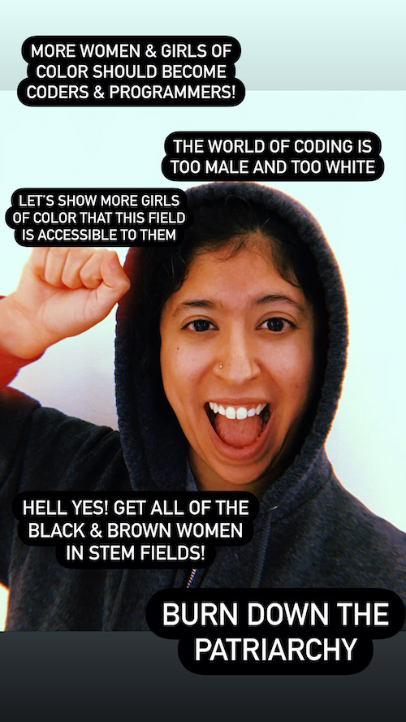
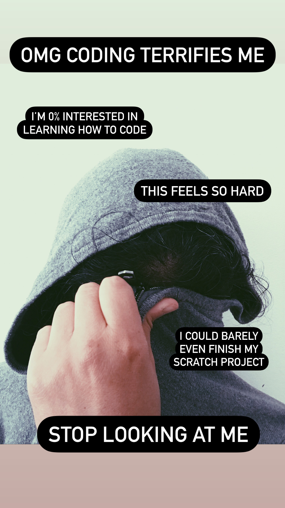

THIS IS ME:
THIS IS ALSO ME:
I FEEL BOTH OF THESE THINGS, at the same time. I feel an unwavering commitment to get more girls & women of color into STEM fields, including coding & programming. I want all young girls of color to see themselves in these fields, to feel like these realms are accessible and available to them.
At the same time, when I think of myself (as a woman of color), I don’t see a coder. I don’t see a computational creator. I see someone who excels at many things – but programming & coding aren’t on that list. I don't feel like they could ever be on that list. In fact, they terrify me.
When I was brainstorming possible T550 projects, I kept coming back to this paradox and to the following question: why does coding feel so scary to me? Why has it always felt so inaccessible to me? And if it feels inaccessible to me (a woman of color with hella privileges pursuing a tech-based Master’s program at Harvard), what does that mean for other girls & women of color?
In the spirit of taking risks, of unlearning my perfectionist tendencies, of pushing myself to a place of discovery and curiosity, I’m going to challenge myself to do something I’ve never done before: learn to code. Eeeeeeeeee! More specifically, I want to learn how to code HTML. Why this particular language? I’ve realized that having at least a basic understanding of HTML will be necessary for the kinds of jobs that I’d like to have in the future. Even just knowing the basics will help me greatly when trying to land a job as a learning designer.
But this project is ultimately much more than simply learning a skill that I may need for future professional endeavors; it’s about giving myself the chance to combat something that feels terrifying. It’s about taking a broad, esoteric question (why are there so few women & girls of color pursuing computer-related fields?) and applying it directly to myself. It’s about being intentional about my process and engaging in some deep, critical self-reflection along the way.
At the end of the day, this isn’t about coding. I could learn all the HTML skills, or I could learn few HTML skills. (My Virgo sun is horrified at the thought of learning only a few skills, or at being imperfect in my process.) This is ultimately about giving myself permission to become a computational creator and feel ALL OF THE FEELS that I might experience along the way.
All that being said, I have NO IDEA where this journey is going to take me. No clue at all. But I’m pretty stoked to find out. And I honestly can’t wait to see all of the learning and growing that results along the way.